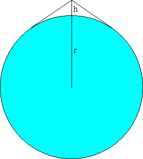

A rectangular sheet of paper is folded so that two diagonally opposite corners come together. If the crease formed is the same length as the longer side of the sheet, what is the ratio of the longer side of the sheet to the shorter side?
Hint - Answer - Solution
In triangle ABC, produce a line from B to AC, meeting at D, and from C to AB, meeting at E. Let BD and CE meet at X.
If  BXE has area a,
BXE has area a,  BXC has area b, and
BXC has area b, and  CXD has area c, what is the area of quadrilateral AEXD?
CXD has area c, what is the area of quadrilateral AEXD?
Hint - Answer - Solution
Two perfect logicians, S and P, are told that integers x and y have been chosen such that 1 < x < y and x+y < 100. S is given the value x+y and P is given the value xy. They then have the following conversation.
P: I cannot determine the two numbers.
S: I knew that.
P: Now I can determine them.
S: So can I.
Given that the above statements are true, what are the two numbers? (Computer assistance allowed.)
Answer - Solution
A snug-fitting belt is placed around the Earth's equator. Suppose you added an extra 1 meter of length to the belt, held it at a point, and lifted until all the slack was gone. How high above the Earth's surface would you then be? That is, find h in the diagram below.
Assume that the Earth is a perfect sphere of radius 6400 km, and that the belt material does not stretch. An approximate solution is acceptable.
Hint - Answer - Solution
A confused bank teller transposed the dollars and cents when he cashed a check for Ms Smith, giving her dollars instead of cents and cents instead of dollars. After buying a newspaper for 50 cents, Ms Smith noticed that she had left exactly three times as much as the original check. What was the amount of the check? (Note: 1 dollar = 100 cents.)
Hint - Answer - Solution
A 12 by 25 by 36 cm cereal box is lying on the floor on one of its 25 by 36 cm faces. An ant, located at one of the bottom corners of the box, must crawl along the outside of the box to reach the opposite bottom corner. What is the length of the shortest such path?
Note: The ant can walk on any of the five faces of the box, except for the bottom face, which is flush in contact with the floor. It can crawl along any of the edges. It cannot crawl under the box.
Hint - Answer - Solution
Five men crash-land their airplane on a deserted island in the South Pacific. On their first day they gather as many coconuts as they can find into one big pile. They decide that, since it is getting dark, they will wait until the next day to divide the coconuts.
That night each man took a turn watching for rescue searchers while the others slept. The first watcher got bored so he decided to divide the coconuts into five equal piles. When he did this, he found he had one remaining coconut. He gave this coconut to a monkey, took one of the piles, and hid it for himself. Then he jumbled up the four other piles into one big pile again.
To cut a long story short, each of the five men ended up doing exactly the same thing. They each divided the coconuts into five equal piles and had one extra coconut left over, which they gave to the monkey. They each took one of the five piles and hid those coconuts. They each came back and jumbled up the remaining four piles into one big pile.
What is the smallest number of coconuts there could have been in the original pile?
Hint - Answer - Solution
Write 271 as the sum of positive real numbers so as to maximize their product.
Hint - Answer - Solution
The sum of the reciprocals of two real numbers is -1, and the sum of their cubes is 4. What are the numbers?
Hint - Answer - Solution
A farmer has four straight pieces of fencing: 1, 2, 3, and 4 yards in length. What is the maximum area he can enclose by connecting the pieces? Assume the land is flat.
Answer - Solution
| Nick Hobson nickh@qbyte.org |